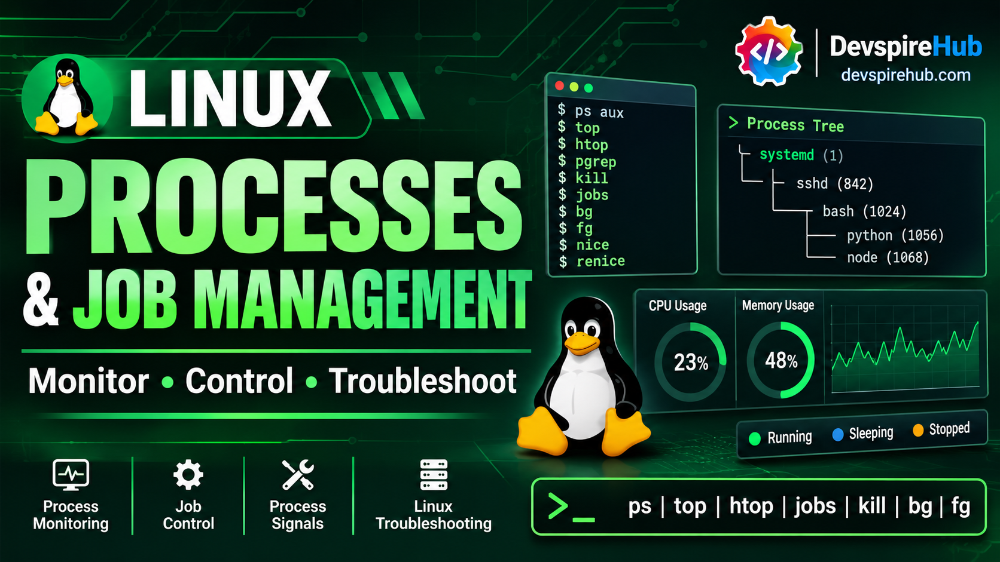

Linux Processes & Job Management Tutorial: Master ps, top, kill, jobs, and Server Troubleshooting
Linux systems run many processes at the same time, including shells, applications, background services, schedulers, and kernel worker threads. Effective Linux process management means identifying the right process, understanding its PID, parent process, state, CPU usage, and memory consumption, then taking safe action using commands such as ps, top, htop, pgrep, kill, pkill, nice, and renice.

This Linux Processes & Job Management Tutorial is designed for beginners, Linux learners, DevOps engineers, system administrators, and anyone preparing for Linux server administration or technical interviews. You will learn how Linux processes work, how to monitor system performance, how foreground and background jobs behave, how to send signals safely, and how to troubleshoot high CPU, high memory, unresponsive applications, zombie processes, and suspicious workloads.
Learning Objectives
Chapter 1 - Process Fundamentals
Chapter 2 - Core Process Management Commands
Chapter 3 - Resource Consumption
Chapter 4 - Signals in Depth
Chapter 5 - Daemons, Zombies, and Orphans
Chapter 6 - Real-World Server Use Cases
Chapter 7 - Hands-On Labs
Chapter 8 - CheatSheet
Introduction
A Linux server is a collection of running processes: shells, services, applications, schedulers, and kernel worker threads. Process management means finding the right process, understanding its state and resource use, changing its priority safely, sending the correct signal, and knowing when not to act.
Run all labs only on a disposable Ubuntu 22.04/24.04, Debian, Fedora, Rocky, AlmaLinux, or RHEL VM/container. Take a VM snapshot before starting. Do not run process-termination, priority, or service-management exercises on production systems.
Commands that modify process state require appropriate permissions. Your PIDs, usernames, timestamps, load values, and output will differ from the examples.
Lab safety
Create a lab directory:
Bash
mkdir -p ~/process-lab
cd ~/process-lab
Check your identity and available tools:
Bash
whoami
id
command -v ps top pgrep kill renice pstree htop
Safety rules:
- Always identify the exact PID and command before sending a signal.
- Prefer
SIGTERMbeforeSIGKILL. - Never broadly use
pkill python,pkill java, or similar patterns. - Do not send
SIGKILLto databases or critical services unless the incident procedure authorizes it. - Do not kill unknown processes before collecting evidence.
- A process in
Dstate may be waiting on hardware or kernel I/O and may not terminate normally. - Renice and negative nice values can affect service performance.
Chapter 1: Process Fundamentals
Program versus process
A program is a stored executable file, such as /usr/bin/python3, /usr/sbin/sshd, or a shell script. A process is a running instance of that program, with a PID, memory, file descriptors, environment, security identity, and scheduling state.
One program can create multiple processes.
Examples:
/← Root directory (everything starts here)
ps -C bash -o pid,ppid,user,stat,cmd
ps -C python3 -o pid,ppid,user,stat,cmd
ps -C sshd -o pid,ppid,user,stat,cmd
ps -C systemd -o pid,ppid,user,stat,cmdExample output; your values will differ:
/← Root directory (everything starts here)
PID PPID USER STAT COMMAND
1234 1230 student Ss -bash
4567 4560 student S python3 process-lab/signal_demo.pyPID and PPID
- PID: Process ID, a unique identifier for a running process.
- PPID: Parent process ID, the PID of the process that created it.
- PID 1: Usually
systemdon modern Linux systems; it is the initial userspace process and commonly reparents orphaned processes.
Inspect a process through /proc:
Bash
pid=$(pgrep -f 'sleep 600' | head -n 1)
echo "$pid"
cat "/proc/$pid/status"
cat "/proc/$pid/cmdline"; printf '\n'
ls "/proc/$pid"
Example output:
Name: sleep
State: S (sleeping)
Pid: 4821
PPid: 1234
Uid: 1000 1000 1000 1000/proc/PID/cmdline uses NUL separators between arguments, so it may appear to run together without a final newline.
Process tree
A process tree shows ancestry. A shell can start a script; the script can start child processes; those children may start further children.
Example output:
systemd
└── sshd
└── bash
└── python3 cpu_load.py
├── python3 cpu_load.py
└── python3 cpu_load.py
Visualize it:
Bash
pstree -p
pstree -p "$$"
pstree -ap | head -n 50
The shell variable $$ contains the current shell PID.
Process states
| State | Name | Meaning |
|---|---|---|
R |
Running/runnable | Executing or waiting for CPU |
S |
Interruptible sleep | Waiting for an event, I/O, timer, or signal |
D |
Uninterruptible sleep | Waiting on kernel/hardware I/O; cannot be killed normally |
T |
Stopped | Paused by SIGSTOP, Ctrl+Z, or a debugger |
Z |
Zombie | Terminated but not yet reaped by parent |
I |
Idle kernel thread | Idle kernel worker |
Zombie process
A zombie is a process that has exited but whose parent has not read its exit status. It consumes a PID-table entry but not CPU time or normal process memory.
A zombie cannot be “killed” because it is already dead. Fix the parent process or restart the service that failed to reap it.
Orphan process
An orphan is a process whose parent exited first. Linux normally reparents it to PID 1, typically systemd.
This is normal for daemons, detached jobs, and processes started with nohup.
Daemon process
A daemon is a long-running background service process, often started by systemd. Examples include sshd, nginx, cron, and systemd-journald.
CPU scheduling
The kernel scheduler decides which runnable process receives CPU time. A process may be runnable but waiting if more work exists than CPU capacity.
Load average
Load average approximates runnable or uninterruptible work over 1, 5, and 15 minutes.
Bash
uptime
Example output:
09:30:00 up 2:15, 1 user, load average: 2.10, 1.80, 1.20Interpret load relative to CPU count:
nprocA load of 2.10 on a 4-core machine is generally less concerning than the same load on a 1-core machine. Load is not a direct CPU-percentage measure because it can include uninterruptible I/O wait.
CPU time versus wall-clock time
- CPU time: Time spent executing on CPU.
- Wall-clock time: Elapsed real-world time.
- User CPU: Time spent in application code.
- System CPU: Time spent in kernel code.
- Context switching: The kernel switching CPU execution between processes or threads.
Inspect CPU and memory:
Bash
top -b -n 1 | head -n 20
Foreground and background processes
A foreground process is connected to the terminal and receives keyboard input. A background process runs without occupying the terminal prompt.
Start a background process:
Bash
sleep 300 &
jobs -l
Example output:
[docs.kernel](https://docs.kernel.org/process/threat-model.html)+ 4821 Running sleep 300 &
Stop a foreground job:
Bash
sleep 300
Press:
Ctrl+Z
Then inspect and resume it:
Bash
jobs -l
bg %1
fg %1
When a terminal closes, background jobs may receive SIGHUP. Use nohup or disown when a job must survive logout.
Bash
nohup ./long_task.sh > long-task.log 2>&1 &
disown -h %1
Chapter 2: Core Process Management Commands
This Chapter introduces the essential Linux commands used to view, monitor, find, and manage running processes. In Linux, every running program is a process, and each process has a unique Process ID (PID). Before you can stop, prioritize, or troubleshoot a process, you must first know how to identify it correctly.
ps - Displays a snapshot of running processes
Syntax
Bash
ps [options]
Important options
| Option | Meaning | Example |
|---|---|---|
a |
Show processes for all users | ps a |
u |
User-oriented output | ps aux |
x |
Include processes without a terminal | ps ax |
-e |
Show every process | ps -e |
-f |
Full-format listing | ps -ef |
-F |
Extra full format | ps -eF |
-p PID |
Select a specific PID | ps -p 1234 |
-u USER |
Select by user | ps -u alice |
-C NAME |
Select by command name | ps -C nginx |
--forest |
Show process tree | ps -ef --forest |
--sort |
Sort output | ps aux --sort=-%cpu |
-o |
Custom output columns | ps -eo pid,cmd |
Beginner example
Bash
ps
ps aux | head -n 10
ps -ef --forest | head -n 20
Practical server-administration examples
Highest CPU consumers:
Bash
ps aux --sort=-%cpu | head -n 15
Highest memory consumers:
Bash
ps aux --sort=-%mem | head -n 15
Inspect one process:
Bash
ps -p 1234 -o pid,ppid,user,stat,%cpu,%mem,etime,cmd
Inspect a user’s processes:
Bash
ps -u alice -o pid,ppid,stat,%cpu,%mem,cmd
Inspect a service:
Bash
ps -C nginx -o pid,ppid,user,stat,cmd
Reading output
USER PID %CPU %MEM STAT COMMAND
alice 4821 92.3 1.2 R python3 cpu_load.py
| Column | Meaning |
|---|---|
USER |
Effective user |
PID |
Process ID |
%CPU |
CPU utilization over the process lifetime or recent interval, depending on ps implementation |
%MEM |
Resident memory as a percentage of physical RAM |
STAT |
Process state |
COMMAND |
Command name or full command line |
Common mistakes
- Treating
%CPUas an instantaneous value. - Confusing PID with job ID.
- Using
ps aux | grep processwhenpgrepis safer. - Killing a parent process without checking its children.
Verification
Bash
ps -p "$pid" -o pid,ppid,user,stat,%cpu,%mem,etime,cmd
top - Monitors processes and system resources in real time
Syntax
Bash
top [options]
Important options
| Option | Meaning | Example |
|---|---|---|
-d SECONDS |
Refresh interval | top -d 2 |
-p PID |
Monitor a process | top -p 1234 |
-u USER |
Filter by user | top -u alice |
-H |
Show threads | top -H -p 1234 |
-b |
Batch mode | top -b -n 1 |
-n ITERATIONS |
Number of refreshes | top -b -n 1 |
Interactive keys
| Key | Action |
|---|---|
h |
Help |
P |
Sort by CPU |
M |
Sort by memory |
T |
Sort by cumulative time |
k |
Kill a process |
r |
Renice a process |
u |
Filter by user |
1 |
Show individual CPU cores |
q |
Quit |
Beginner example
Bash
top
# Press q to exit.
Practical server-administration examples
Monitor one process:
Bash
top -p 1234
Take one noninteractive snapshot:
Bash
top -b -n 1 | head -n 25
Monitor a user:
Bash
top -u alice
Reading top output
| Field | Meaning |
|---|---|
Load average |
Runnable/uninterruptible work over 1, 5, and 15 minutes |
%CPU |
Process CPU use |
%MEM |
Resident memory as a percentage of physical RAM |
VIRT |
Total virtual memory |
RES |
Resident physical memory |
SHR |
Shared memory |
TIME+ |
Cumulative CPU time |
S |
Process state |
NI |
Nice value |
Common Mistakes
- Confusing
VIRTwith actual RAM use. - Assuming high load always means high CPU.
- Killing from
topwithout first confirming the PID and command. - Forgetting that
topcan show threads when-His used.
Verification
Bash
top -b -n 1 -p "$pid"
htop - Provides an enhanced interactive process monitor with easier navigation, filtering, sorting, and tree views.
Install
Ubuntu/Debian:
Bash
sudo apt update
sudo apt install htop
RHEL/Rocky/Alma/Fedora:
Bash
sudo dnf install htop
Important keys
| Key | Action |
|---|---|
F1 |
Help |
F3 |
Search |
F4 |
Filter |
F5 |
Tree view |
F6 |
Sort |
F9 |
Kill |
F10 |
Quit |
Beginner example
Bash
htop
Practical server-administration examples
Bash
htop -u alice
htop -p 1234
When htop is better
- Easier navigation and filtering.
- Color-coded resource use.
- Convenient tree view.
- Easier search and sorting.
htop is a monitoring aid, not a substitute for ps, logs, metrics, and incident evidence.
Common mistakes
- Killing from
htopwithout confirming the process. - Assuming colors mean the same thing across versions and themes.
- Using it as the only source of evidence.
Verification
Bash
ps -p "$pid" -o pid,user,stat,%cpu,%mem,cmd
pstree - Displays the process hierarchy
Syntax
Bash
pstree [options] [PID or user]
Important options
| Option | Meaning | Example |
|---|---|---|
-p |
Show PIDs | pstree -p |
-a |
Show command-line arguments | pstree -ap |
-u |
Show user transitions | pstree -u |
-h |
Highlight current process | pstree -h |
-A |
Use ASCII tree characters | pstree -A |
Beginner example
Bash
pstree -p "$$"
Practical server-administration example
Inspect the ancestry of a workload:
Bash
pid=$(pgrep -f 'cpu_load.py' | head -n 1)
pstree -ap "$pid"
Common mistakes
- Confusing sibling processes with child processes.
- Assuming a process tree remains stable.
- Searching the output with
grepwhenpgrepis more reliable.
Verification
Bash
ps -ef --forest
pgrep - Finds process IDs by name, user, parent, or full command line
Syntax
Bash
pgrep [options] pattern
Important options
| Option | Meaning | Example |
|---|---|---|
-l |
Show process name | pgrep -l nginx |
-a |
Show full command line | pgrep -a python3 |
-u USER |
Filter by user | pgrep -u alice bash |
-x |
Exact match | pgrep -x bash |
-f |
Match full command line | pgrep -f "python3 cpu_load.py" |
-P PPID |
Match children of a parent | pgrep -P 1234 |
-n |
Newest match | pgrep -n bash |
-o |
Oldest match | pgrep -o bash |
Beginner example
Bash
pgrep -a sleep
Practical server-administration example
Find a specific workload before acting:
Bash
pgrep -af "python3 cpu_load.py"
Why pgrep is safer
pgrep matches process attributes directly and avoids accidental matching of the grep command itself.
Compare:
Bash
ps aux | grep python
with:
Bash
pgrep -af python3
Common mistakes
- Using broad patterns.
- Forgetting
-fwhen searching a full command line. - Assuming one match exists when multiple processes match.
- Using the result in
killwithout inspecting it.
Verification
Bash
pgrep -af "cpu_load.py"
ps -fp "$(pgrep -f 'cpu_load.py' | tr '\n' ',' | sed 's/,$//')"
kill - Sends a signal to a process. It does not always terminate it
Syntax
Bash
kill [options] PID
Important signals
| Signal | Number | Typical purpose |
|---|---|---|
SIGHUP |
1 | Hangup; often used to reload configuration |
SIGINT |
2 | Interrupt; usually Ctrl+C |
SIGQUIT |
3 | Quit and optionally dump core |
SIGKILL |
9 | Force termination; cannot be caught |
SIGTERM |
15 | Graceful termination request |
SIGCONT |
18 | Resume a stopped process |
SIGCHLD |
17 | Child status changed |
SIGSTOP |
19 | Pause a process |
Examples
Bash
kill 1234
kill -15 1234
kill -TERM 1234
kill -9 1234
kill -KILL 1234
kill -STOP 1234
kill -CONT 1234
kill -l
Safety rules
- Confirm the exact PID first.
- Use
SIGTERMfirst. - Wait for cleanup.
- Verify afterward.
- Use
SIGKILLonly when necessary. - Never use
SIGKILLcasually against databases or critical services.
Common mistakes
- Killing a PID without confirming its command.
- Sending
SIGKILLimmediately. - Assuming
killcan terminate aD-state process. - Confusing shell job IDs with PIDs.
Verification
Bash
kill -0 1234 2>/dev/null && echo "Process exists" || echo "Process absent"
pgrep -af "cpu_load.py"
pkill - Sends signals to processes selected by name, user, parent, or command-line pattern
Syntax
Bash
pkill [options] pattern
Important options
| Option | Meaning | Example |
|---|---|---|
-l |
List matching names | pkill -l nginx |
-f |
Match full command line | pkill -f "python3 cpu_load.py" |
-u USER |
Match user | pkill -u alice bash |
-x |
Exact name match | pkill -x nginx |
-n |
Newest match | pkill -n nginx |
-o |
Oldest match | pkill -o nginx |
-SIGNAL |
Specify signal | pkill -TERM nginx |
Beginner example
Bash
pgrep -l nginx
pkill -TERM nginx
Practical server-administration example
Terminate a specific controlled workload:
Bash
pgrep -af "python3 cpu_load.py"
pkill -TERM -f "python3 cpu_load.py"
Safety warning
pkill can match multiple processes.
Avoid:
Bash
pkill python
pkill java
pkill bash
Always inspect first:
Bash
pgrep -af pattern
Common mistakes
- Using a broad pattern.
- Forgetting
-fwhen the process name differs from the command line. - Sending
SIGKILLwithout tryingSIGTERM. - Matching your own shell or terminal process.
Verification
Bash
pgrep -af "cpu_load.py"
killall - Sends signals to processes with an exact command name
Syntax
Bash
killall [options] NAME
Important options
| Option | Meaning | Example |
|---|---|---|
-i |
Interactive confirmation | killall -i firefox |
-u USER |
Match user | killall -u alice bash |
-SIGNAL |
Specify signal | killall -TERM nginx |
-v |
Verbose | killall -v nginx |
Beginner example
Bash
killall -i firefox
Practical server-administration example
Bash
killall -TERM nginx
Prefer systemctl restart nginx when the service is managed by systemd.
Difference
| Command | Selection method |
|---|---|
kill |
Exact PID |
pkill |
Name, user, parent, or command-line pattern |
killall |
Exact command name |
Common mistakes
- Assuming
killallonly affects one process. - Using it on a common command name.
- Confusing command name with full command line.
Verification
Bash
pgrep -x nginx
jobs - Displays jobs managed by the current shell
Syntax
Bash
jobs [options]
Important options
| Option | Meaning | Example |
|---|---|---|
-l |
Show PIDs | jobs -l |
-p |
Show only PIDs | jobs -p |
-r |
Show running jobs | jobs -r |
-s |
Show stopped jobs | jobs -s |
Beginner example
Bash
sleep 300 &
jobs
jobs -l
jobs -r
jobs -s
Practical server-administration example
Check whether a backup job is still running before closing a maintenance terminal:
Bash
jobs -l
Common mistakes
- Confusing job ID
%1with PID. - Assuming
jobsshows processes from another terminal. - Closing the terminal before checking background jobs.
Verification
Bash
jobs -l
fg and bg - Move shell jobs between foreground and background
Syntax
Bash
fg [%JOB]
bg [%JOB]
Beginner example
Bash
sleep 300
Press:
Text
Ctrl+Z
Then:
Bash
jobs
bg %1
fg %1
Job ID versus PID
%1is a shell job ID.- The PID is the operating-system process identifier.
Bash
jobs -l
Terminal closure
A normal background job may receive SIGHUP when its controlling terminal closes. To keep it running:
Bash
nohup ./long_task.sh > long-task.log 2>&1 &
disown -h %1
nohup ignores hangup signals. disown -h prevents the shell from sending SIGHUP to the job when the shell exits.
Common mistakes
- Using
%1withkill; use the PID instead. - Forgetting output redirection with
nohup. - Assuming a background process automatically survives terminal closure.
Verification
Bash
jobs -l
ps -fp "$(jobs -p | tr '\n' ',' | sed 's/,$//')"
nice - Starts a process with a scheduling priority
Syntax
Bash
nice [options] [command]
Nice values
| Nice value | Effect |
|---|---|
-20 |
Highest priority |
0 |
Default |
19 |
Lowest priority |
Higher nice value means lower scheduling priority. Lower nice value means higher scheduling priority.
Only root can normally set a negative nice value.
Important options
| Option | Meaning | Example |
|---|---|---|
-n VALUE |
Set nice value | nice -n 10 backup.sh |
Beginner example
Bash
nice -n 10 sleep 300 &
ps -o pid,ni,cmd -p "$!"
Practical server-administration examples
Run a backup at low priority:
Bash
nice -n 19 ./backup.sh
Run a batch report without competing aggressively for CPU:
Bash
nice -n 10 python3 report.py
Start an important service with higher priority:
Bash
sudo nice -n -5 /usr/local/bin/important_service
Common mistakes
- Assuming nice alone prevents resource exhaustion.
- Using negative nice values without authorization.
- Forgetting that nice affects CPU scheduling, not disk or network limits.
Verification
Bash
ps -o pid,ni,cmd -p "$!"
renice - Changes the nice value of an already-running process
Syntax
Bash
renice [options] priority [-p PID] [-u USER]
Important options
| Option | Meaning | Example |
|---|---|---|
-n VALUE |
New nice value | renice -n 10 -p 1234 |
-p PID |
Target process | renice -n 10 -p 1234 |
-u USER |
Target all processes of a user | sudo renice -n 10 -u alice |
-g PGID |
Target process group | renice -n 10 -g 1234 |
Beginner example
Bash
sleep 300 &
pid=$!
renice -n 10 -p "$pid"
ps -o pid,ni,cmd -p "$pid"
Practical server-administration example
Reduce the scheduling priority of a runaway report process:
Bash
pid=$(pgrep -f 'python3 report.py' | head -n 1)
renice -n 19 -p "$pid"
Increase priority only when authorized:
Bash
sudo renice -n -5 -p "$pid"
Common mistakes
- Assuming renice fixes a memory leak or infinite loop.
- Lowering nice values without approval.
- Renicing every process for a user when only one process needs adjustment.
- Forgetting that normal users can usually increase niceness but not decrease it.
Verification
Bash
ps -o pid,ni,cmd -p "$pid"
Chapter 3: Resource Consumption
This Chapter 3 explains how to identify and understand the CPU, memory, disk I/O, and system-load usage of Linux processes. It helps you find which process is consuming excessive resources, decide whether that usage is normal, and investigate issues such as slow servers, high load, swap pressure, and unexpected service restarts.
CPU usage - Measuring processor consumption
CPU usage measures how much processor time a process consumes. High CPU is not automatically bad; a backup, compiler, or report may legitimately use CPU.
Find high-CPU processes
Bash
ps aux --sort=-%cpu | head -n 15
top -b -n 1 | head -n 20
Memory usage - Physical, virtual, and swap metrics
Memory concepts
| Term | Meaning |
|---|---|
| Virtual memory | Total address space reserved by a process |
| Resident memory | Physical RAM currently used |
| Shared memory | Memory shared with other processes |
| Swap | Disk-backed memory used when RAM pressure occurs |
Check system memory
Bash
free -h
cat /proc/meminfo | head -n 20
Find high-memory processes
Bash
ps aux --sort=-%mem | head -n 15
Inspect one process
Bash
pid=$(pgrep -f 'cpu_load.py' | head -n 1)
cat "/proc/$pid/status" | grep -E '^(Name|State|Pid|PPid|VmRSS|VmSize|Threads)'
Disk I/O and load - Uncovering non-CPU bottlenecks
Disk I/O can cause high load without high CPU.
Bash
vmstat 1 5
uptime
du -sh /var/log
Example vmstat output
Text
procs -----------memory---------- ---swap-- -----io---- -system-- ------cpu-----
r b swpd free buff cache si so bi bo in cs us sy id wa st
1 0 0 8123456 123456 2345678 0 0 12 45 120 240 8 2 88 2 0
High wa means significant I/O wait. High b can indicate blocked processes.
OOM killer and limits - Kernel terminations and resource boundaries
When memory is exhausted, the kernel may invoke the OOM killer and terminate a process. This can appear as an unexpected service restart.
Check logs (Ubuntu/Debian)
Bash
sudo journalctl -k | grep -i -E 'oom|out of memory' | tail -n 50
sudo grep -i -E 'oom|out of memory' /var/log/kern.log 2>/dev/null | tail -n 50
Check logs (RHEL-family)
Bash
sudo journalctl -k | grep -i -E 'oom|out of memory' | tail -n 50
sudo grep -i -E 'oom|out of memory' /var/log/messages 2>/dev/null | tail -n 50
Inspect process limits
Bash
pid=$(pgrep -f 'cpu_load.py' | head -n 1)
cat "/proc/$pid/limits"
ulimit -a
Identify problem processes - Rapid diagnostic commands
| Problem | Command |
|---|---|
| High CPU | ps aux --sort=-%cpu | head |
| High memory | ps aux --sort=-%mem | head |
| Long-running process | ps -eo pid,user,etime,cmd --sort=-etime | head |
| Stopped process | ps -eo pid,user,stat,cmd | awk '$3 ~ /^T/' |
| Zombie process | ps -eo pid,ppid,stat,cmd | awk '$3 ~ /^Z/' |
| Unexpected process | ps aux, pgrep -af pattern, and inspect executable path |
Chapter 4: Signals in Depth
Signals in Depth explains how Linux communicates with running processes using signals. A signal is a notification sent to a process to interrupt it, pause it, resume it, reload its configuration, or request it to terminate.
Linux Signals - Inter-Process Notifications and Control
Signals are notifications sent to processes.
| Signal | Number | Purpose | Can be caught? |
|---|---|---|---|
SIGHUP |
1 | Hangup/config reload | Usually yes |
SIGINT |
2 | Interrupt, usually Ctrl+C |
Usually yes |
SIGQUIT |
3 | Quit and dump core | Usually yes |
SIGKILL |
9 | Force termination | No |
SIGTERM |
15 | Graceful termination request | Usually yes |
SIGCONT |
18 | Resume stopped process | No |
SIGCHLD |
17 | Child process status changed | Usually yes |
SIGSTOP |
19 | Pause process | No |
SIGINT versus SIGTERM versus SIGKILL - Termination Comparison
| Signal | Typical source | Cleanup opportunity | Use |
|---|---|---|---|
SIGINT |
Ctrl+C |
Usually yes | Stop an interactive foreground job |
SIGTERM |
kill, pkill |
Usually yes | Preferred termination request |
SIGKILL |
Administrator | No | Last resort |
SIGSTOP and SIGCONT - Freezing and Resuming Workloads
Pause a process for investigation:
Bash
kill -STOP 1234
ps -p 1234 -o pid,stat,cmd
Resume it:
Bash
kill -CONT 1234
SIGSTOP is useful for temporarily freezing a noncritical process, but do not leave a production service stopped.
Sending signals - Common Command Invocations
Bash
kill -TERM PID
pkill -TERM -f "python3 cpu_load.py"
killall -TERM process-name
In top, press k, enter the PID, then choose a signal.
Chapter 5: Daemons, Zombies, and Orphans
This Chapter explains three important types of Linux processes: daemons, zombie processes, and orphan processes. Understanding them helps you identify normal background services, detect failed child-process handling, and investigate unexpected or long-running processes on a Linux server.
Daemons - Background Service Architecture
Daemons are background service processes.
Inspect common services
Bash
systemctl status ssh 2>/dev/null || systemctl status sshd 2>/dev/null || true
systemctl status nginx 2>/dev/null || true
ps -C sshd -o pid,ppid,user,stat,cmd
pgrep -a sshd
pgrep -a nginx
Ubuntu commonly uses ssh.service; RHEL-family systems commonly use sshd.service.
Zombie processes - Dead Processes Awaiting Parent Reaping
Find zombies
Bash
ps aux | awk '$8 ~ /^Z/ {print}'
ps -eo pid,ppid,stat,cmd | awk '$3 ~ /^Z/ {print}'
Inspect the parent
Bash
zombie_pid=$(ps -eo pid,stat --no-headers | awk '$2 ~ /^Z/ {print $1; exit}')
if [[ -n "$zombie_pid" ]]; then
ppid=$(ps -o ppid= -p "$zombie_pid" | tr -d ' ')
ps -fp "$ppid"
fi
Fix the parent or restart the affected application. Killing the zombie itself does not solve the underlying reaping problem.
Orphan processes - Reparented Processes
Find long-running processes
Bash
ps -eo pid,ppid,user,stat,etime,cmd --sort=-etime | head -n 20
An orphan may be normal if it is a daemon or detached job. Investigate if it is unexpected, privileged, or consuming resources.
Long-running processes - Monitoring Execution Durations
Check elapsed time
Bash
ps -eo pid,user,etime,cmd --sort=-etime | head -n 20
Example output
Text
PID USER ELAPSED COMMAND
987 root 12-03:22:11 /usr/sbin/sshd -D
1234 student 01:22:10 python3 process-lab/signal_demo.py
Chapter 6: Real-World Server Use Cases
Real-World Server Use Cases applies Linux process and job management skills to practical server administration situations. Instead of only learning commands, this section shows how to investigate and respond safely to common issues such as high CPU usage, high memory consumption, unresponsive applications, suspicious processes, and long-running background jobs.
This part covers key operational scenarios, including:
- High CPU usage: Identify the top CPU-consuming process with
ps, inspect its process tree withpstree, reduce its priority usingrenice, and terminate it only after confirmation. - High memory usage: Find memory-heavy processes, inspect RSS and virtual memory details, check swap usage, review OOM killer logs, and investigate application logs before restarting a service.
- Unresponsive application: Check the process state, send a graceful
SIGTERM, wait and verify, then useSIGKILLonly as a last resort before restarting through systemd. - Suspicious process: Gather evidence such as the command line, executable path, process ancestry, and network activity before taking action; do not immediately kill a process if forensic preservation is important.
- Background job management: Run long tasks such as backups with
nohup, detach them withdisown, and monitor their progress usingjobs,pgrep, log files, andtop.
High CPU usage - Step-by-Step Triage
1. Identify the process:
Bash
ps aux --sort=-%cpu | head -n 15
2. Confirm ownership and command:
Bash
pid=$(ps aux --sort=-%cpu | awk 'NR==2 {print $2}')
ps -fp "$pid"
pstree -ap "$pid"
3. Determine whether it is expected.
4. Reduce priority if safe:
Bash
renice -n 19 -p "$pid"
5. Stop or terminate only after approval:
Bash
kill -TERM "$pid"
6. Restart the affected service if needed:>
Bash
sudo systemctl restart service-name
High memory usage - Identification and Mitigation
1. Identify the consumer:>
Bash
ps aux --sort=-%mem | head -n 15
free -h
2. Inspect memory details:
Bash
pid=$(ps aux --sort=-%mem | awk 'NR==2 {print $2}')
grep -E '^(Name|State|VmRSS|VmSize|Threads)' "/proc/$pid/status"
3. Check swap and OOM logs:
Bash
free -h
sudo journalctl -k | grep -i -E 'oom|out of memory' | tail -n 50
4. Review application logs and metrics.>
5. Restart only when approved and safe:
Bash
sudo systemctl restart service-name
Unresponsive application - Diagnostic and Termination Escalation
1. Check state:
Bash
pid=$(pgrep -f 'application-name' | head -n 1)
ps -p "$pid" -o pid,ppid,user,stat,%cpu,%mem,etime,cmd
2. Send SIGTERM:
Bash
kill -TERM "$pid"
3. Wait and verify:
Bash
sleep 10
pgrep -af 'application-name'
4. Escalate to SIGKILL only if required:
Bash
kill -KILL "$pid"
5. Restart through systemd:
Bash
sudo systemctl restart service-name
Suspicious process - Evidence Collection and Forensics
Collect evidence before killing:
Bash
pid=$(pgrep -f 'suspicious-pattern' | head -n 1)
ps -fp "$pid"
cat "/proc/$pid/cmdline"; printf '\n'
readlink -f "/proc/$pid/exe"
ls -l "/proc/$pid/exe"
pstree -ap "$pid"
Check network activity if authorized tools are installed:
Bash
sudo ss -tunap | grep "pid=$pid"
- Do not immediately kill the process if forensic preservation matters.
- Isolate the host or stop the service according to the incident-response plan.
Background job management - Execution, Monitoring, and Detachment
Start a long backup:
Bash
nohup ./backup.sh > backup.log 2>&1 &
disown -h %1
Check it:
Bash
jobs -l
pgrep -af backup.sh
tail -f backup.log
Monitor CPU:
Bash
pid=$(pgrep -f 'backup.sh' | head -n 1)
top -p "$pid"
Chapter 7: Hands-On Labs
The Hands-On Labs section gives you practical experience with Linux process and job management in a safe, controlled environment. Instead of only reading commands, you will create test processes, inspect their PID, PPID, state, CPU, and memory usage, and practice monitoring them with tools such as ps, top, htop, pgrep, and pstree.
The labs include Process Investigation, Signal Management, and High CPU Simulation. Each lab has a clear objective, step-by-step tasks, commands, expected results, and a verification checklist so you can confirm that you understand both the command and the reason behind it.
Lab 7.1 - Process Investigation
Objective
Identify PID, PPID, CPU usage, memory usage, command, and process state.
Task
- Start
sleep 600. - From another terminal, find and inspect it.
- View its process tree.
- Monitor it with
top. - Inspect
/proc. - Record PID, PPID, CPU, memory, command, state, and parent.
Solution
In terminal 1:
Bash
sleep 600
In terminal 2:
Bash
pgrep -a sleep
Example output:
Text
4821 sleep 600
Inspect it:
Bash
pid=$(pgrep -f '^sleep 600$' | head -n 1)
ps -p "$pid" -o pid,ppid,user,stat,%cpu,%mem,etime,cmd
Example output; your values will differ:
Text
PID PPID USER STAT %CPU %MEM ELAPSED COMMAND
4821 1234 student S 0.0 0.0 00:01:12 sleep 600
View the process tree:
Bash
pstree -p "$pid"
pstree -p
Monitor it:
Bash
top -p "$pid"
Inspect /proc:
Bash
cat "/proc/$pid/status"
cat "/proc/$pid/cmdline"; printf '\n'
ls "/proc/$pid"
Record:
Text
PID: 4821
PPID: 1234
CPU: near 0%
Memory: near 0%
Command: sleep 600
State: S
Parent: interactive Bash shell
Expected-results checklist
- The sleep process has a PID and PPID.
- CPU usage is near zero.
- State is usually
S. - Parent is the shell or terminal process.
/proc/PID/cmdlineshowssleep 600.
Lab 7.2 - Signal Management
This Lab helps you understand how Linux signals control a process. Using a small Python script, you practice interrupting a foreground process with Ctrl+C (SIGINT), pausing it with SIGSTOP, resuming it with SIGCONT, and terminating it gracefully with SIGTERM.
Objective
Practice SIGINT, SIGTERM, SIGKILL, SIGSTOP, and SIGCONT safely.
Task
Create a Python test process, then pause, resume, terminate, and verify it.
Solution
Create the script:
Bash
cd ~/process-lab
cat > signal_demo.py <<'EOF'
import time
while True:
print("Process running...", flush=True)
time.sleep(2)
EOF
Run it in the foreground:
Bash
python3 signal_demo.py
Press:
Text
Ctrl+C
Ctrl+C sends SIGINT.
Start it in the background:
Bash
python3 signal_demo.py > signal-demo.log 2>&1 &
Find its PID:
Bash
pid=$(pgrep -f 'python3 signal_demo.py' | head -n 1)
echo "$pid"
Pause it:
Bash
kill -STOP "$pid"
Verify:
Bash
ps -p "$pid" -o pid,stat,cmd
Expected state:
Text
T
Resume it:
Bash
kill -CONT "$pid"
ps -p "$pid" -o pid,stat,cmd
Expected state:
Text
S
Send graceful termination:
Bash
kill -TERM "$pid"
sleep 2
pgrep -af 'signal_demo.py' || echo "Process terminated"
If it remains, force kill:
Bash
kill -KILL "$pid"
pgrep -af 'signal_demo.py' || echo "Process removed"
Expected-results checklist
Ctrl+Cstops the foreground process.SIGSTOPpauses the process.SIGCONTresumes it.SIGTERMrequests graceful shutdown.SIGKILLforcibly removes it.pgrepconfirms the final state.
Lab 7.3 - High CPU Simulation
This Lab simulates a controlled high-CPU workload so you can practice real server troubleshooting. You run a Python script that creates two CPU-intensive child processes, then identify the parent and child processes using top, htop, ps, pgrep, and pstree.
Objective
Create a controlled CPU workload, investigate it, reduce its priority, and terminate it safely.
Task
Run a two-process CPU workload, identify it, renice it, terminate it, and verify CPU recovery.
Solution
Create the workload:
Bash
cd ~/process-lab
cat > cpu_load.py <<'EOF'
import multiprocessing
import time
def burn_cpu():
while True:
pass
if __name__ == "__main__":
processes = []
for _ in range(2):
p = multiprocessing.Process(target=burn_cpu)
p.start()
processes.append(p)
time.sleep(120)
for p in processes:
p.terminate()
EOF
Run it:
Bash
python3 cpu_load.py > cpu-load.log 2>&1 &
Investigate:
Bash
top
htop
ps aux --sort=-%cpu | head -n 15
pgrep -af cpu_load.py
pstree -p | grep -A2 -B2 cpu_load
Identify the parent:
Bash
parent_pid=$(pgrep -f '^python3 cpu_load.py$' | head -n 1)
echo "Parent PID: $parent_pid"
pgrep -P "$parent_pid" -a
Reduce priority:
Bash
renice -n 19 -p "$parent_pid"
ps -o pid,ni,stat,%cpu,cmd -p "$parent_pid"
Terminate gracefully:
Bash
kill -TERM "$parent_pid"
sleep 3
pgrep -af cpu_load.py || echo "Workload stopped"
If needed, force kill remaining child processes:
Bash
for pid in $(pgrep -f 'cpu_load.py'); do
kill -KILL "$pid"
done
Verify:
Bash
pgrep -af cpu_load.py || echo "No cpu_load processes remain"
top -b -n 1 | head -n 15
Expected-results checklist
- CPU usage rises during simulation.
- The workload is identified by command and PID.
- Parent and child processes are distinguished.
- Renice reduces scheduling priority.
SIGTERMstops the controlled workload.- CPU usage returns to normal.
Cheat Sheets
Process-management command cheat sheet
Bash
ps
ps aux
ps -ef
ps -ef --forest
ps aux --sort=-%cpu | head -n 15
ps aux --sort=-%mem | head -n 15
ps -p PID -o pid,ppid,user,stat,%cpu,%mem,etime,cmd
ps -u USER -o pid,ppid,stat,%cpu,%mem,cmd
ps -C NAME -o pid,ppid,user,stat,cmd
top
top -d 2
top -p PID
top -u USER
top -b -n 1
htop
htop -u USER
htop -p PID
pstree
pstree -p
pstree -ap PID
pgrep NAME
pgrep -l NAME
pgrep -af PATTERN
pgrep -u USER NAME
pgrep -P PPID
pgrep -x NAME
kill PID
kill -TERM PID
kill -KILL PID
kill -STOP PID
kill -CONT PID
pkill -TERM -f PATTERN
killall -TERM NAME
jobs
jobs -l
fg %JOB
bg %JOB
nohup COMMAND > output.log 2>&1 &
disown -h %JOB
nice -n 10 COMMAND
renice -n 19 -p PID
sudo renice -n -5 -p PID
Signal cheat sheet
| Signal | Number | Purpose | Can be caught? |
|---|---|---|---|
SIGHUP |
1 | Hangup/config reload | Usually yes |
SIGINT |
2 | Interrupt, usually Ctrl+C |
Usually yes |
SIGQUIT |
3 | Quit and dump core | Usually yes |
SIGKILL |
9 | Force termination | No |
SIGTERM |
15 | Graceful termination | Usually yes |
SIGCONT |
18 | Resume stopped process | No |
SIGCHLD |
17 | Child status changed | Usually yes |
SIGSTOP |
19 | Pause process | No |
Process state cheat sheet
| State | Meaning |
|---|---|
R |
Running or runnable |
S |
Interruptible sleep |
D |
Uninterruptible sleep |
T |
Stopped |
Z |
Zombie |
I |
Idle kernel thread |
Process priority cheat sheet
| Nice value | Meaning |
|---|---|
-20 |
Highest priority; normally root only |
0 |
Default |
10 |
Lower priority |
19 |
Lowest priority |
Troubleshooting - Diagnostic Reference Matrix
| Problem | Likely cause | Fix |
|---|---|---|
| High CPU usage | Legitimate workload, runaway loop, or compromised process | Identify PID, inspect command/parent, check logs, renice if safe, terminate only when authorized |
| High memory usage | Memory leak, cache growth, oversized workload, or too many workers | Check RSS, swap, OOM logs, application metrics, and restart only when approved |
| Process will not terminate | It ignores SIGTERM, is stuck in D state, or has child processes |
Check state, inspect children, wait, then use SIGKILL only if authorized |
Process is in D state |
Waiting on kernel or hardware I/O | Check storage, NFS, device, kernel logs, and hardware; SIGKILL may not work |
| Zombies keep appearing | Parent is not reaping child exit status | Investigate and restart/fix the parent application |
| Background job stops after terminal closes | Terminal closure sends SIGHUP |
Use nohup, redirect output, and use disown -h |
renice permission denied |
User tried to lower nice value | Use sudo or ask an authorized administrator |
pkill matches too many processes |
Broad pattern or missing -x |
Always run pgrep -af first; use exact PID where possible |
| Monitoring tool reports false positives | Threshold too low, expected process not excluded, or CPU sampling interval too short | Tune thresholds, add exclusions, sample over time, and validate detections manually |
| Service disappears unexpectedly | OOM killer, crash, configuration failure, or supervisor restart | Check systemctl status, journal logs, kernel OOM logs, and application logs |
Practice Exercises
- Start
sleep 600, find its PID, and inspect/proc/PID/status. - Start three background jobs and use
jobs -l,fg, andbg. - Use
nohupto start a long-running script and verify it survives terminal closure. - Find the top five CPU-consuming processes.
- Find the top five memory-consuming processes.
- Pause and resume a process using
SIGSTOPandSIGCONT. - Use
pgrep -afbefore terminating a controlled workload. - Create a CPU workload, renice it, and terminate it safely.
- Find all zombie processes and identify their parents.
- Generate JSON, CSV, and Markdown reports using ProcWatch.
Interview Questions
1. What is the difference between a program and a process?
A program is a stored executable file. A process is a running instance of that program with a PID, memory, state, and execution context.
2. Why is SIGTERM preferred over SIGKILL?
SIGTERM allows the application to shut down cleanly, flush data, close connections, and release resources. SIGKILL cannot be caught and may leave incomplete work or stale state.
3. What is a zombie process?
A zombie is a terminated process whose parent has not collected its exit status. It consumes a PID entry but not CPU or normal memory. Investigate the parent.
4. What does a high load average mean?
It indicates work waiting for CPU or potentially blocked on uninterruptible I/O. Interpret it relative to CPU count and current process states.
5. Why should pkill be used carefully?
It can match multiple processes. Always inspect matches with pgrep -af before sending a signal, and prefer an exact PID for critical services.
Conclusion
This Linux Processes & Job Management Tutorial provides a complete, practical path from understanding basic processes to confidently troubleshooting real Linux servers. It explains how programs become processes, how PIDs and PPIDs define process relationships, how process states reveal system behavior, and how tools such as ps, top, htop, pgrep, pstree, and /proc help administrators gather accurate evidence before taking action.
The tutorial also builds strong job-management skills by covering foreground and background processes, jobs, fg, bg, Ctrl+Z, nohup, and disown. These skills are essential for safely managing long-running scripts, backups, maintenance tasks, and detached workloads without accidentally losing them when a terminal closes
Upcoming Module
systemd & Service Management is the next step after Linux process management. While process management focuses on individual running programs, systemd manages the services, dependencies, startup order, logging, and scheduled tasks that keep a Linux server running reliably. systemctl is the main command-line tool for controlling and inspecting systemd units and services./a>
About Website
DevspireHub is a beginner-friendly learning platform offering step-by-step tutorials in programming, ethical hacking, networking, automation, and Windows setup. Learn through hands-on projects, clear explanations, and real-world examples using practical tools and open-source resources - no signups, no tracking, just actionable knowledge to accelerate your technical skills.
Support DevSpireHub
Enjoying the tutorials and resources? Support DevSpireHub and help us create more free programming, cybersecurity, networking, and technology content.
AI Tutorials & Projects
Explore step-by-step AI tutorials and hands-on projects to build practical, real-world skills.
Your support helps keep learning resources accessible to everyone.
Color Space
Discover Perfect Palettes
Featured Wallpapers (For desktop)
Download for FREE!
.png)
.png)
.png)
.png)
.png)
.png)